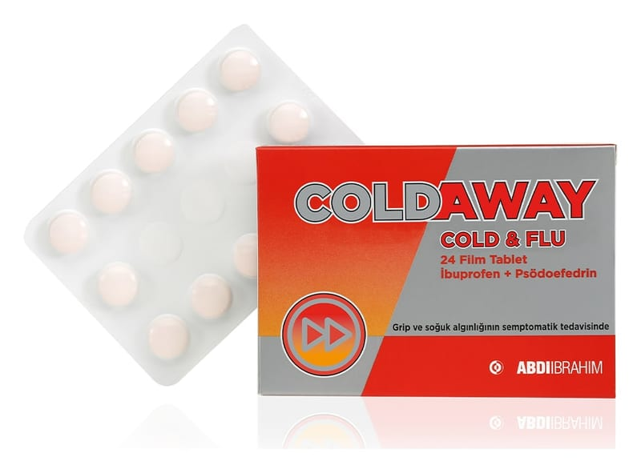

Coldaway Cold & Flu 200 mg/30 mg Film Kaplı Tablet, 30 Adet

Ne için kullanılır
KT · Bölüm 1COLDAWAY COLD & FLU, 12, 24 ve 30 film kaplı tabletlik blister ambalajlarda sunulan bir ilaçtır. COLDAWAY COLD & FLU, etkin madde olarak ibuprofen ve psödoefedrin içerir.
COLDAWAY COLD & FLU’nun etkin maddesi olan ibuprofen, ağrı kesici ve ateş düşürücü özelliklere sahip nonsteroid antiinflamatuvar bir ilaçtır. Psödoefedrin burun ve sinüslerde (burun boşluklarında) oluşan dolgunluğu gidermeye yarayan dekonjestan bir ilaçtır.
COLDAWAY COLD & FLU, ağrı kesici, ateş düşürücü ve iltihap giderici etkileri sayesinde, başlıca, aşağıda belirtilen durumların tedavi edilmesi için kullanılır:
• Grip , soğuk algınlığı ve sinüzit seyrinde gözlenen burun tıkanıklığı, baş ağrısı, ateş, vücut ağrıları ve diğer ağrılar